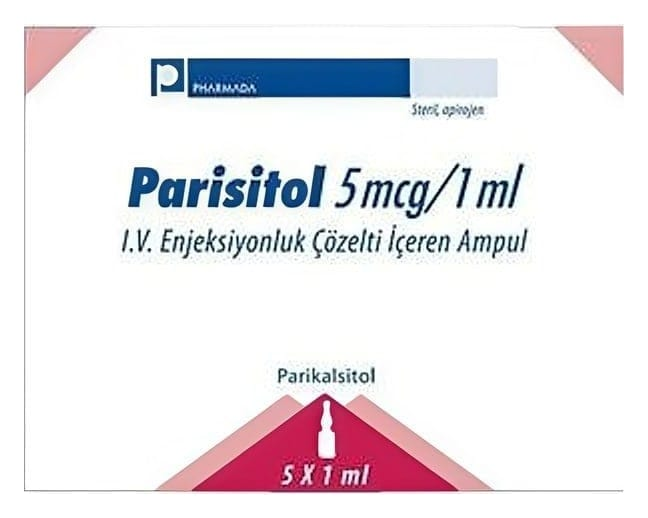

Parisitol 5 mcg/1 ml I.V. Enjeksiyonluk Çözelti İçeren Ampul, 5 Adet

Ne için kullanılır
KT · Bölüm 1• PARISITOL 1 mL’lik renksiz Tip I cam ampullerde 5 adetlik ambalajlarda kullanıma sunulmuştur.
• Her 1 mL PARISITOL enjeksiyonluk çözelti 5 mikrogram parikalsitol içerir.
• PARISITOL enjeksiyonluk çözelti; sulu, berrak ve renksiz bir çözeltidir.
• PARISITOL enjeksiyonluk çözelti, aktif Vitamin D’nin sentetik bir formunu içerir ve vitamin D grubu ilaçlara aittir.
• Vitamin D, karaciğerde başlayan ve böbreklerde tamamlanan iki basamaklı proses ile vücutta aktive olur. Aktif D vitamini, böbrekler ve kemikler de dahil olmak üzere, vücuttaki birçok dokunun normal faaliyet göstermesi için gerekli bir maddedir. PARISITOL enjeksiyonluk çözelti, vücut yeterli miktarda üretemediğinde aktif D
vitamini için bir kaynak sağlar.
• PARISITOL enjeksiyonluk çözelti, hemodiyalize girilen kronik böbrek hastalığındaki düşük aktif D vitamini seviyeleri ile ilişkilendirilen kandaki yüksek paratiroid hormon seviyelerinin (sekonder hiperparatiroidizm) önlenmesi ve tedavisinde kullanılmaktadır.